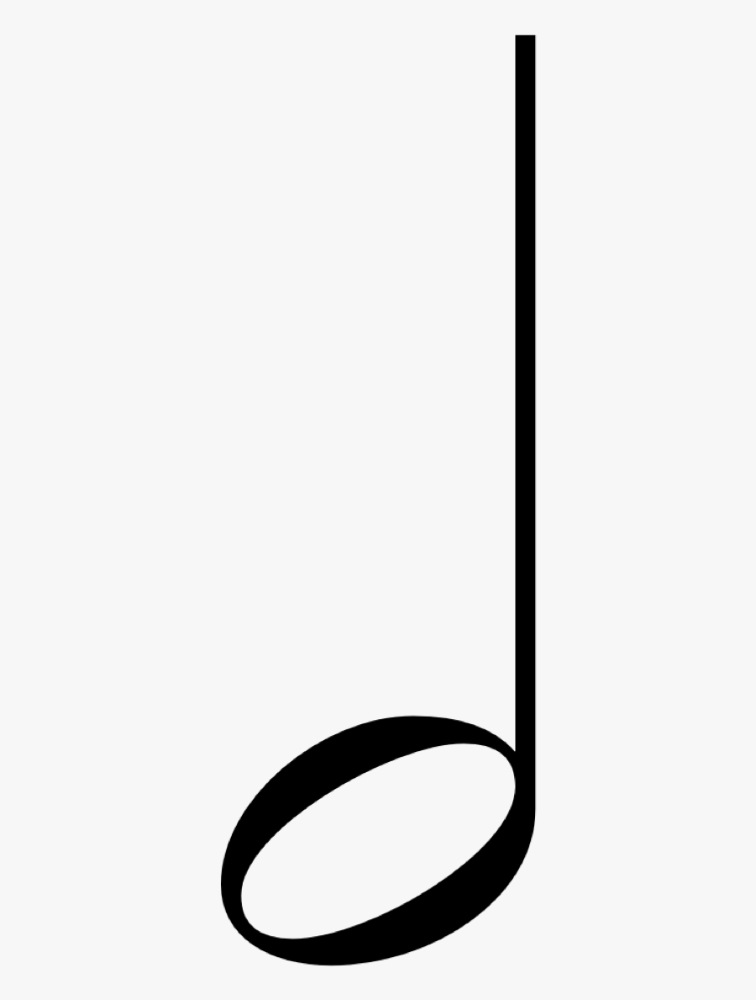
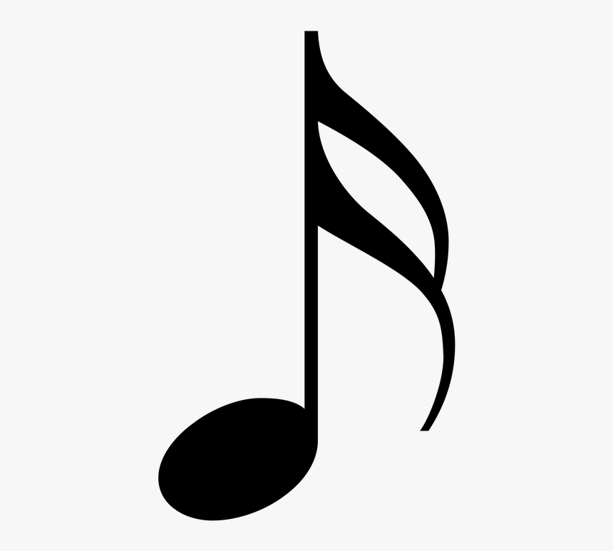

Types of Notes

Half note in American or minim in British is a note played for half the length of the entire note and twice the length of a quarter note or crotchet. It was given its Latin title minima, which the meaning is slightest or littlest since it was the most limited of the five note values utilized in early medieval music documentation. In time marks with 4 as the foot number, half note is two beats long. In any case, when 2 is the foot number, the half note is one beat long. Half notes are notated with an empty oval note head like entire note and straight note stem with no banners like a quarter note. The half rest or minim rest indicates a hush of the same length. Half rests are drawn as filled-in rectangles sitting on best of the centerline of the melodic staff, although in polyphonic music the rest may ought to be moved to a diverse line or indeed a record line.
The American term half note may be a 19th-century advance interpretation of German halbe Note. The Catalan,French, and Spanish names which the meaning is white, refers from the reality that the minima was the most limited unfilled note in mensural white documentation, which is genuine of the modern frame as well. The shape within the prior dark documentation takes after the cutting edge quarter note. The Greek, Chinese, Japanese, and Korean names are cruel half, and in Greek, the advanced word (miso – μισό) and more seasoned (imisi – ήμισι) are utilized.
Sixteenth note or semiquaver is a note for half the length of an eighth note or tremble. It is the proportionate of the semifusa in mensural documentation, to begin with found in 15th-century documentation. Sixteenth notes are notated with an oval, filled-in note head and a straight note stem with two banners. A single sixteenth note is continuously stemmed with banners, whereas two or more are as a rule radiated in bunches. A comparing image is the sixteenth rest, which signifies a hush for the same length.
As with all notes with stems, sixteenth notes are drawn with stems to the correct of the note head, confronting up, when they are underneath the centerline of the melodic staff or on the center line, in vocal music. When they are on the center line or over it, they are drawn with stems on the cleared out of the note head, confronting down. Flags are continuously on the correct side of the stem,and bend to the proper. On stems confronting up, the banners begin at the best and bend down for descending confronting stems, the banners begin at the foot of the stem and bend up. The note determines from the semifusa in mensural documentation. Semifusa moreover assigns the present day sixty-fourth note in Spanish, Catalan and Portuguese.
arrow_back Previous Page
Next Page arrow_forward
{kind=link}
{kind=link}